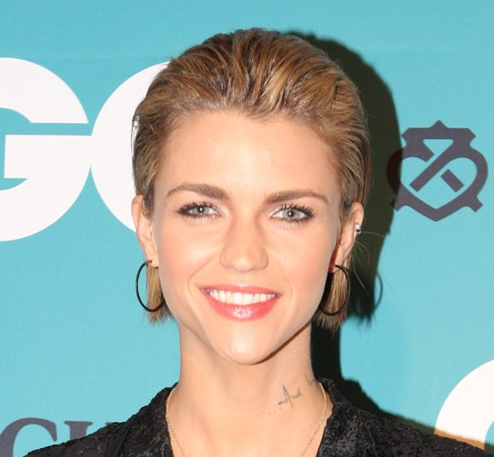

Ruby Rose mixing Neon Records' next compilation


_(cropped).jpg){kind=link}
Sydney A-list glamour queen and TV host Ruby Rose is already very much in the public eye, with hosting duties on MTV as well as the new Channel 10 vehicle 7pm Project, but she’s keeping herself busy with another project on the boil – she’s been handpicked to mix the next Neon Essential compilation for label heads TV Rock AKA Ivan Gough and Grant Smillie.
Surprised at the choice? It’s actually not too much of a stretch, as Ruby Rose has been pouring her energy into building up her DJ profile recently with gigs all over her hometown of Sydney as well as interstate. She’s also no stranger to the Australian dance scene, having hosted last year’s Sony inthemix50 awards.
Neon Records was fired up by the TV Rock duo earlier this year in conjunction with Warner Music, with Gough telling ITM in an interview they’re seeking to strike a tidy balance between underground credibility and mainstream success with the project. “We want to be able to do both. Obviously if you get a record that’s working in the back room, and then you realise, ‘hang on, this is gonna be a big tune,’ you need to have the mechanisms in place… We’re not afraid of radio. Radio is what allows you to pay the bills. You can’t really do that with underground music, it’s very difficult especially in Australia.”